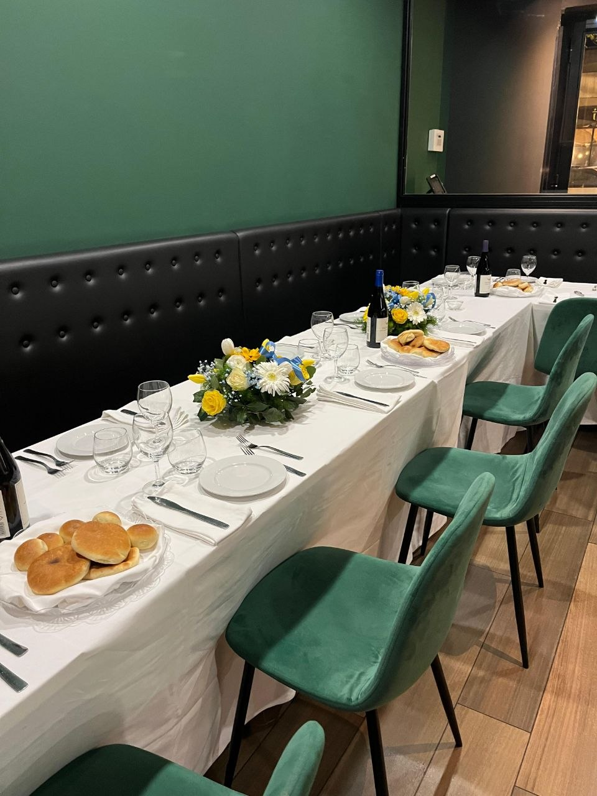
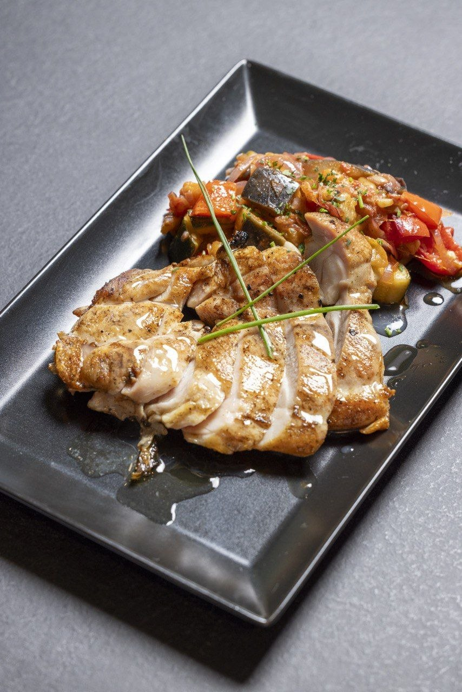
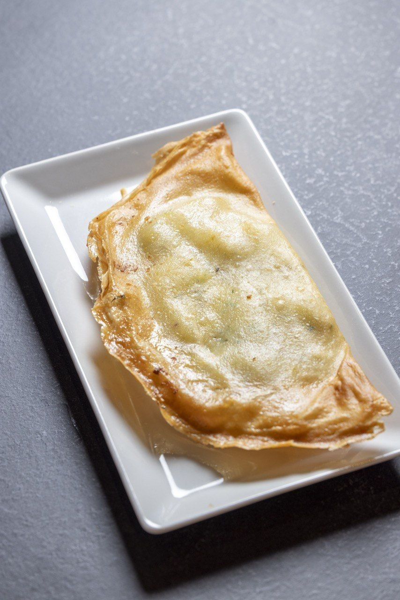
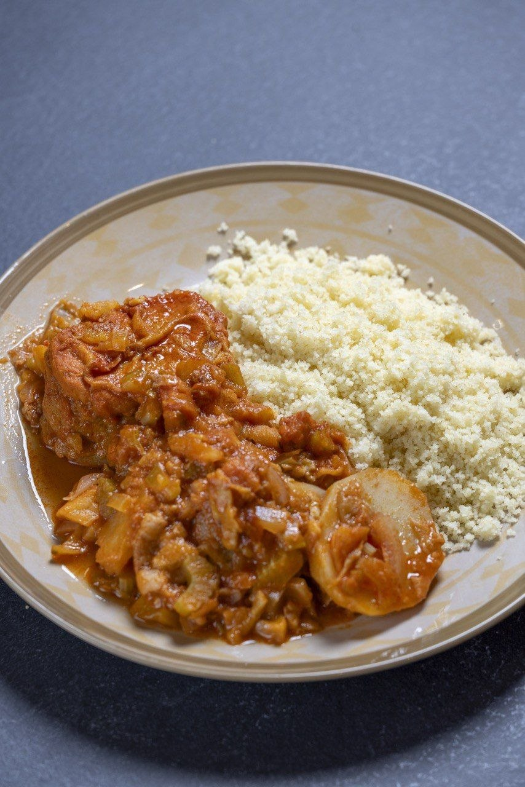
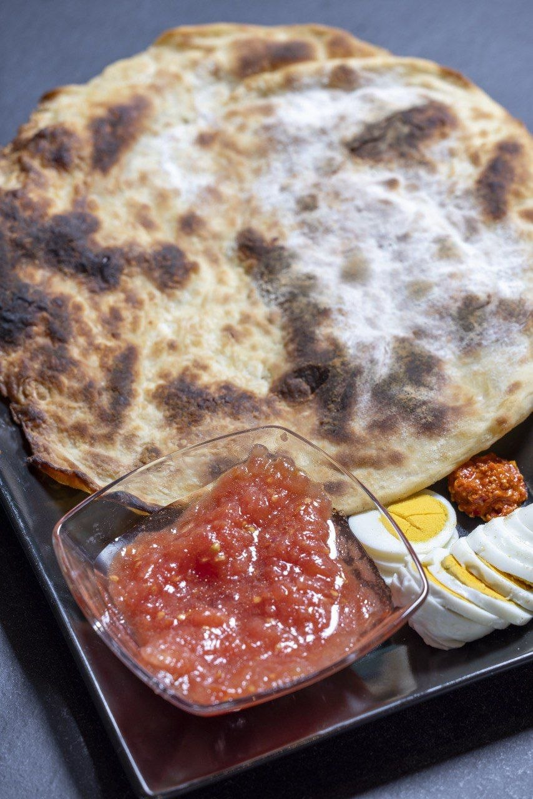
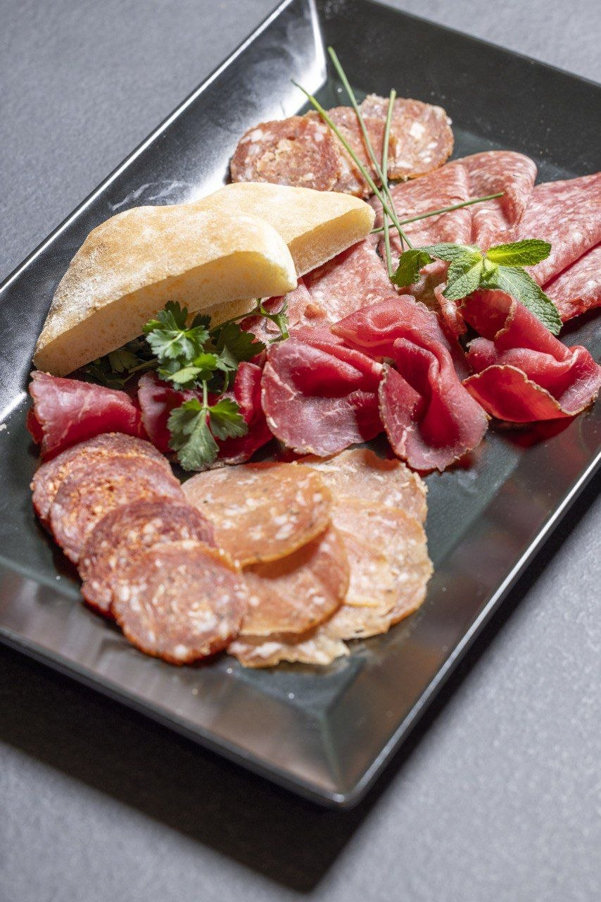
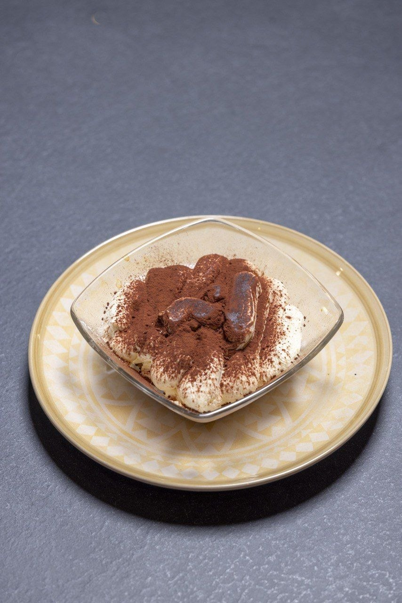
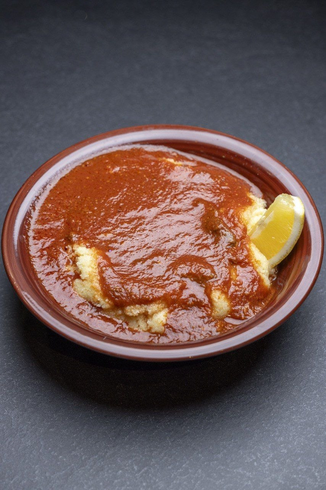
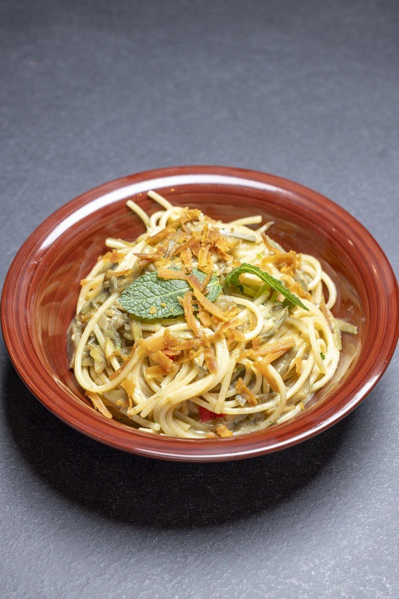
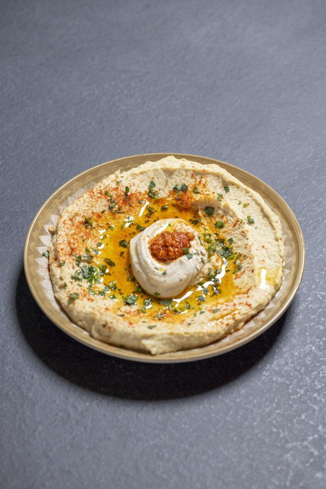

Little Tripoli
Cucina ebraica mediorientale
Scopri la Nostra StoriaSapori di una volta
Cucina Kosher
Rispettiamo rigorosamente le leggi della Kasherut per offrirvi piatti genuini e preparati secondo la tradizione ebraica tripolina.
Ingredienti Freschi
Selezioniamo solo le migliori materie prime per garantire la freschezza e l'autenticità di ogni nostra specialità.
Atmosfera Familiare
Il nostro ristorante è un luogo dove sentirsi a casa, accolti dal calore e dalla cortesia della nostra famiglia.
La Nostra Storia
Tradizione, passione e memoria dal 2013
Little Tripoli nasce nel 2013 dal desiderio di portare a Roma l'autentica tradizione culinaria della comunità ebraica di Tripoli. Situato nella vivace zona di Piazza Bologna, il nostro ristorante è diventato un punto di riferimento per chi cerca i sapori veri e intensi della Libia.
La nostra è una cucina "di casa", fatta di ricette tramandate di generazione in generazione. Ogni piatto racconta una storia di spezie, di cotture lente e di ingredienti semplici che, combinati con sapienza, creano armonie indimenticabili.
Essere un ristorante Kosher significa per noi non solo rispetto delle regole, ma anche garanzia di qualità e attenzione estrema alla scelta di ogni prodotto che entra nella nostra cucina.

La Cucina Tripolina
"La cucina tripolina è un incrocio magico tra influenze mediterranee, africane e mediorientali. È caratterizzata dall'uso sapiente di spezie come il cumino, la paprica e il carvi, e da piatti iconici come il Cous Cous, preparato rigorosamente a mano, e l'Hraimi, il celebre pesce in salsa piccante."
Galleria Fotografica
Un viaggio visivo tra i nostri sapori e la nostra atmosfera








